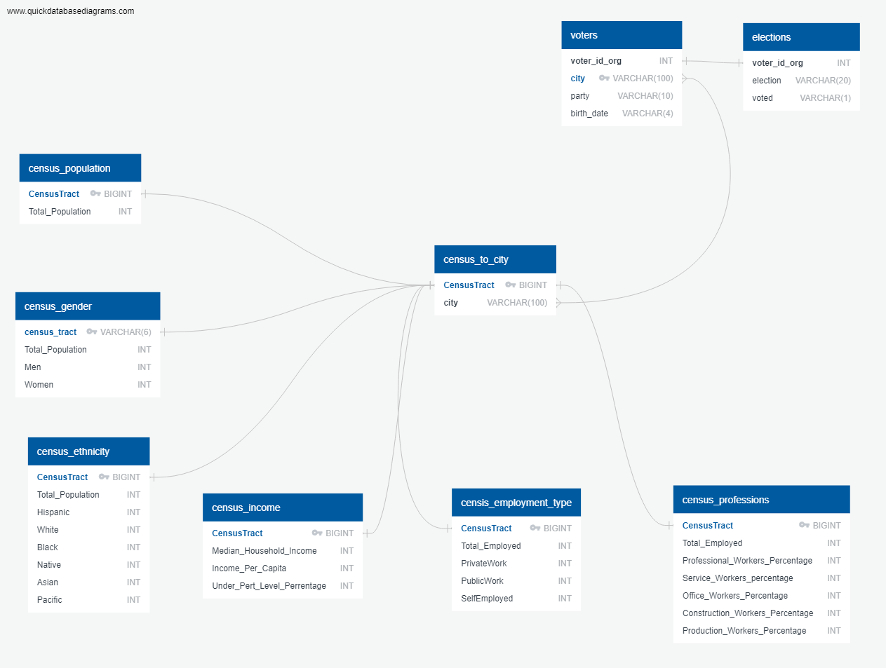

*Links to download all schema, documentation and CSV files are in the Load Dropdown.
We created a database in PostgreSQL and utilized QuickDatabaseDiagrams.com
to create an ERD and table schema matching the CSV files. While CSVs were created for the census data, these Pandas dataframs were loaded into the database via SQLAlchemy.
Code for this can be found at the end of the censusdata_final Jupyter notebook in the Transform dropdown.
Sample SQL query views were also created and saved in a schema file for reference.
